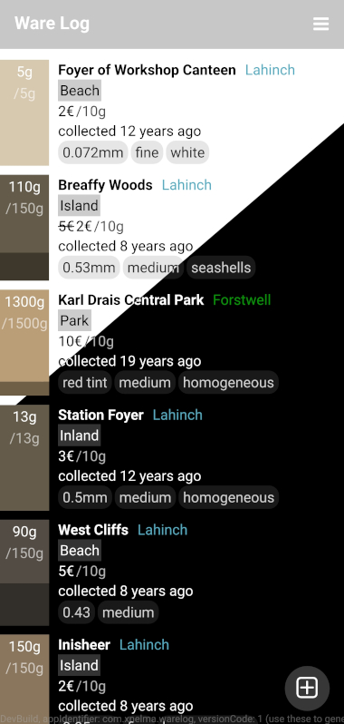
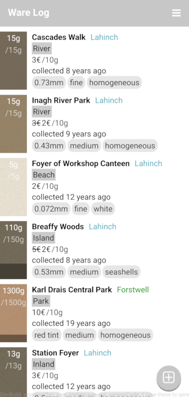

So far, the list view shows only the main color for an item, and the weight not at all, especially not the remaining weight. In this chapter we will write a custom component that will also show those properties.
First, the item weight. Add a qml file for the custom component with e.g. the file name WeightIndicator.qml. The base item would be the same Rectangle as before, but height and width are set in the delegate, and the color in the component qml file:
WeightIndicator {
id: weightIndicator
height: parent.height
width: delegate.width / 7
}
and in WeightIndicator.qml:
import Felgo import QtQuick import QtQuick.Layouts Rectangle { color: mainColor }
If you build now, the list items should still look the same.
Then add properties for the data the component will show: the total and remaining weight, the weight unit and the main, texture and border color. Also add properties for texture and border settings, including an enum for the texture type (so far none or noise). Specify default values except for the main color. Later in this chapter latter properties will be used to expose some of the texture properties, so the texture can be manipulated when the component is instantiated. To be able to manipulate the properties, we also need to propagate them by adding properties to CollectionDelegate, too.
Item { // in CollectionDelegate.qml
id: delegate
...
property string ageDescription: qsTr("collected %1 %2 ago")
property int borderWidth: 0
property int textureType: WeightIndicator.None
property int textureHeight: height
property int textureWidth: width
property bool editable: false
property bool smooth: false
...
WeightIndicator {
id: weightIndicator
...
weightTotal: delegate.weightTotal
weightLeft: delegate.weightLeft
weightUnit: delegate.weightUnit
mainColor: delegate.mainColor
textureColor: delegate.textureColor
borderColor: delegate.borderColor
borderWidth: delegate.borderWidth
textureType: delegate.textureType
textureHeight: delegate.textureHeight
textureWidth: delegate.textureWidth
editable: delegate.editable
smooth: delegate.smooth
}
...
}
SwipeOptionsContainer { // in SwipableCollectionDelegate.qml
id: swipeOptionsContainer
...
property string ageDescription: qsTr("collected %1 %2 ago")
property int borderWidth: 0
property int textureType: WeightIndicator.None
property int textureHeight: height
property int textureWidth: width
property bool editable: false
property bool smooth: false
...
CollectionDelegate {
...
borderWidth: swipeOptionsContainer.borderWidth
textureType: swipeOptionsContainer.textureType
textureHeight: swipeOptionsContainer.textureHeight
textureWidth: swipeOptionsContainer.textureWidth
editable: swipeOptionsContainer.editable
smooth: swipeOptionsContainer.smooth
}
}
delegate: SwipableCollectionDelegate { // in Main.qml
width: pageMain.width
borderWidth: 0
textureType: WeightIndicator.Texture.Noise
textureHeight: 354 // a bit less than 380, the height of texture.png
textureWidth: 220 // approx. 220, the width of texture.png
smooth: false
}
Rectangle { // in WeightIndicator.qml
id: wiRoot
required property int weightTotal
required property int weightLeft
required property string weightUnit
required property string mainColor
property string textureColor: mainColor
property string borderColor: mainColor
enum Texture { None, Noise }
property int borderWidth: 0
property int textureType: WeightIndicator.None
property int textureHeight: height
property int textureWidth: width
property bool editable: false
property bool smooth: false
color: mainColor
}
The component should show labels for the remaining and total weight, and visualize the amount left, which can be done by greying out a proportion of the rectangle. This can all be done via child elements of the rectangle. Add an AppText item for the remaining weight and the total weight, and another rectangle, in black and with a low opacity, e.g. 0.4, to the base rectangle.
Rectangle {
id: rectWeightLeft
color: "black"
opacity: 0.4
height: parent.height * ((weightTotal - weightLeft) / weightTotal)
width: parent.width
anchors.bottom: parent.bottom
}
AppText {
id: txtWeightLeft
text: weightLeft + weightUnit
anchors.top: parent.top
anchors.topMargin: 2
anchors.horizontalCenter: parent.horizontalCenter
}
AppText {
id: txtWeightTotal
text: "/" + weightTotal + weightUnit
anchors.top: txtWeightLeft.bottom
anchors.topMargin: 2
anchors.horizontalCenter: parent.horizontalCenter
}
The black rectangle will grow from the bottom, and the labels are aligned to the top. The black rectangle should be behind the labels, which can be achieved by defining it before them (as done above), or using the z property.
The labels will get a text white color to contrast well with the colored background and in case the black rectangle fills the colored rectangle up to the top. The label for the total weight is a bit darker than the more relevant remaining weight.
AppText {
id: txtWeightLeft
...
color: "white"
...
}
AppText {
id: txtWeightTotal
...
color: "white"
opacity: 0.6
...
}
And, in case the numbers have too many digits for the width of the component, set the elide property (for now):
AppText {
id: txtWeightLeft
...
elide: Text.ElideRight
width: parent.width
maximumLineCount: 1
horizontalAlignment: Text.AlignHCenter
...
}
AppText {
id: txtWeightTotal
...
elide: Text.ElideRight
width: parent.width
maximumLineCount: 1
horizontalAlignment: Text.AlignHCenter
...
}
The anchors.horizontalCenter property is not used anymore due to setting the full width for the elide property and using horizontalAlignment instead.

The texture and border color should help illustrate some characteristics of an item, so color a texture if applicable, and a hull of some sorts. For now, I will add a texture for the sand example database as hardcoded asset. The texture will simply be noise I generated using a graphics editor. It has an alpha channel instead of the white color in contrast to black.
Add an image texture.png with some black-and-transparent texture, preferrably noise, to the assets folder. This image will be used as a mask with the MultiEffect component (requires the QtQuick.Effects import), applied to a Rectangle. The rectangle is set to the texture color, and the effect will have the mask properties set to smooth out the noise a bit. The image is not defined inside the effect, such that the layer can be enabled. While this should help reduce aliasing, it also gives options to manipulate the texture: by changing the texture size and whether it should be smooth, we can get some smooth wood-like texture and a noisy, very fine sand-like texture with just the texture.png asset. It would be even better to use the Qt shader effect, but let's just use the picture for now and leverage some scaling and artifact byproducts for simplicity.
Both Rectangle and MultiEffect should be added before the label and transparent-black Rectangle, to be drawn below them (but the order can also be set using the z property).
Rectangle {
id: rectTextureColor
color: textureColor
visible: false
height: parent.height
width: parent.width
}
MultiEffect {
source: rectTextureColor
anchors.fill: rectTextureColor
property bool enabled: textureType == WeightIndicator.Noise
&& textureColor !== mainColor
visible: enabled
maskEnabled: enabled
maskSource: mask
maskThresholdMax: 0.7
maskThresholdMin: 0.3
maskSpreadAtMax: 0.7
maskSpreadAtMin: 0.7
}
Image {
id: mask
source: "../assets/texture.png"
visible: false
height: parent.height
width: parent.width
fillMode: Image.Image.PreserveAspectCrop
layer.enabled: true
layer.live: wiRoot.editable
layer.smooth: wiRoot.smooth
layer.textureSize: Qt.size(textureWidth, textureHeight)
}

It has to be noted that using the texture this way is inherently fragile, as it depends heavily on the added texture, scaling of the UI elements, and the artifacts resulting from the Qt implementation among other points. But it gives a first way of creating different textures with less code.
Set the border color and width of the rectangle with the corresponding properties. The texture should not show on the border, so subtract the border width from its height and width.
Rectangle {
id: wiRoot
...
color: mainColor
border.color: borderColor
border.width: borderWidth
Rectangle {
id: rectTextureColor
...
height: parent.height - 2*borderWidth
width: parent.width - 2*borderWidth
anchors.centerIn: parent
}
...
}
You can now try out different parameters for the border color and width, and of course the texture color and size. While I am not using the border for the sample database right now, we will add a settings view later on, that will allow setting the properties for different domains.